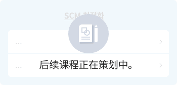

Management College
为实现Deep Change，如何改变工作方式呢？
如何才能成长呢？
如何才能成长呢？
Management College为实现Deep Change，提高Biz.执行能力，涵盖6个Function Group，1个Competency领域的职务能力学习内容。除了各个Function Group的知识/专业性，还结合各Function，企划融合/整合能力培养课程。
SCM/Operation
- 学习为了给客户及时并以低廉价格提供产品和差异化服务，提升经营活动效率的“供应链管理”，以提高相应职务的SK成员的Deep Change执行力。
点击各Badge与课程，即可进入到相应页面。
方法论/
应用学习
采购Advanced
概念理解
采购Essentials
- 我是真正的采购者吗？采购的本质
- - 对采购业务的理解
- - 理解采购业务的5R
- - 采购业务的核心
- - 发展变化的采购管理
- 不知道就会惹出麻烦的采购合同/采购相关法律理解
- - 采购业务中需遵守的道德
- - 对采购合同的理解
- - 转包法与共赢合作法
- - 转包价格，必知事项
- - 禁止要求提供技术材料，要注意的是？
- 我在采购什么？采购品类的理解与管理
- - 采购品类的分类与管理
- - 根据采购品类需采取的材料管理战略
- - 对服务/外包品类的理解
- 切不可大意，采购风险管理
- - Intro : tylenol风险管理
- - 采购风险管理及采购连续性计划
- - 采购材料价格变动风险管理
- - 疫情时代与采购风险管理
- 数字采购创新
- - 对数字创新的核心理解
- - 数字采购创新方案
- 理解与运用采购业务流程
- - 理解与应用采购业务流程
- - 供应商探索与评估
- - RFP、RFQ制作方法与注意事项
- - 投标步骤管理与评估
- - 供应商选择及签合同
- - 对PO制作的理解
- - 合同签署后的采购活动
- 越了解越赚钱，为采购者量身打造的财务/会计/物流
- - 账户注册管理
- - Incoterms 2020理解与应用
- - 供应商信用和财务分析
- - 贸易保险/进口保险实务
- - 进口通关、关税与附加税
- 采购成本管理
- - 采购成本战略意义
- - 价格分析即价格适当性判断
- - 成本分析的意义与成本分析方法
- - 理解TCO ( Total Cost of Ownership )
- - 运用TCO ( Total Cost of Ownership )
- - 目标成本及价值分析
- 企业的社会价值与采购
- - 采购与ESG、SV实践 (1)
- - 采购与ESG、SV实践 (2)
